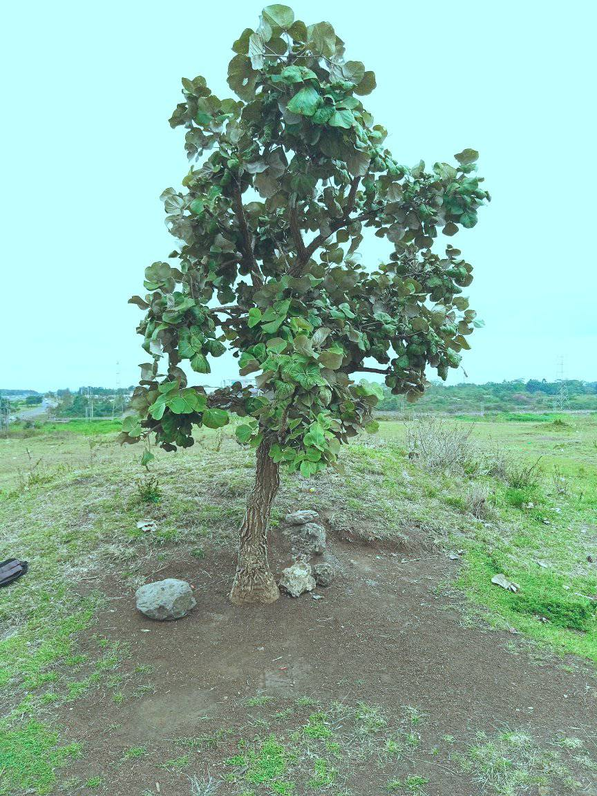

We are delighted to have you visit our website and invite you to experience the love, joy, and spiritual growth that our community offers. At God's Chosen Ministry, we believe in creating a welcoming and inclusive environment where everyone can find a sense of belonging and purpose.
Whether you are new to the area, seeking a deeper connection with your faith, or looking for a supportive and loving church family, you have found the right place. Our vibrant worship services, meaningful teachings, and various ministries are designed to help you grow in your relationship with God and connect with others.
"For many are called, but few are chosen." - Matthew 22:14
"But you are a chosen generation, a royal priesthood, a holy nation, His own special people, that you may proclaim the praises of Him who called you out of darkness into His marvelous light." - 1 Peter 2:9
With blessings,
God's Chosen Ministry
God's Chosen Ministry was established by God through Pastor Chris on 29th September 2019. Through steadfast prayers and unwavering faith, our church has grown and flourished over the years, becoming a beacon of hope and a place of spiritual nourishment for many.
We are committed to spreading the love of Christ and fostering a strong sense of community among our members. Our mission is to inspire and equip individuals to live out their faith with passion and purpose. At God's Chosen Ministry, we offer vibrant worship services, engaging Bible studies, and various ministries that cater to all ages and backgrounds.
Our journey is marked by God's grace and the dedication of our congregation. We continue to seek His guidance in all that we do, and we are excited to see what He has in store for us in the future.
Join us and become a part of a loving and supportive church family. Together, we can make a difference and bring light to the world.
God's Chosen Ministry began humbly under a tree, where a small group of believers gathered to pray and worship. This sacred spot became the foundation for our community, symbolizing growth and resilience. Through faith and dedication, we have grown into the vibrant ministry we are today.
We offer the following services:
Kesha on 31 January 2025
Kesha on 28 February 2025
Annointing on 2 February 2025
Holy Communion on 9 February 2025
6th Anniversary on 29th September
You can access our sermons on our YouTube channel, you may also subscribe to remain updated:


Location: Nairobi, Kahawa West, Kamuthi
Email: mitchychris@gmail.com
Phone: +254 792 674 775
Follow Us on Social Media
Follow us on Facebook
Follow us on TikTok